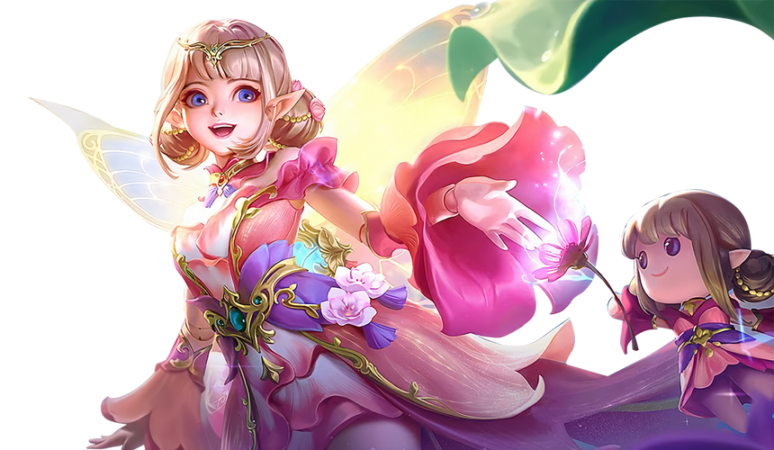
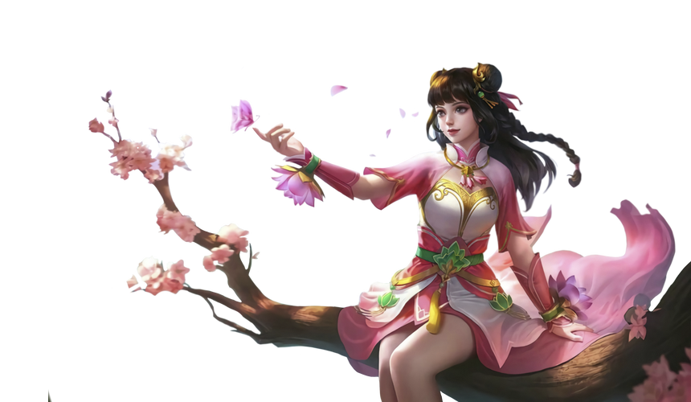
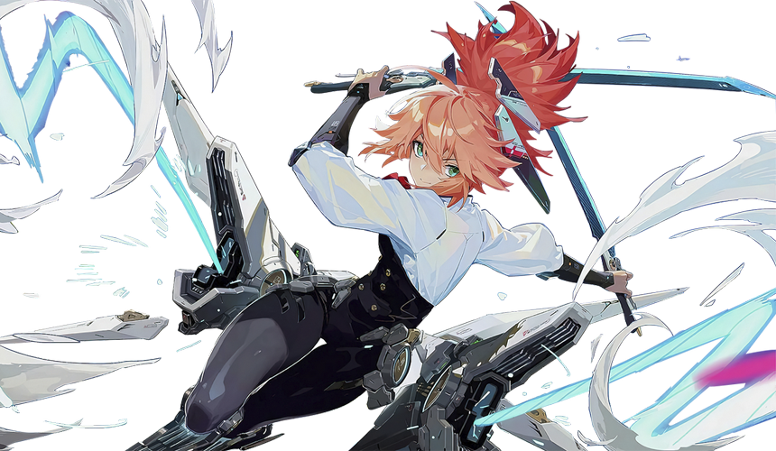

Scarlet Flower
Hanabi
Marksman Gold Lane
As the oldest daughter of the Scarlet Supreme Grandmaster, Hanabi had been raised as the successor to her father's position and exhibited extraordinary talent.
25%
Durability
75%
Offense
80%
Control

Shadow Ranger
Benedetta
Assassin XP Lane
This courageous, persevering female ranger leads a team and fights in the land south to Lantis Mountain, protecting the scattered settlement set up by the last survivors.
50%
Durability
75%
Offense
30%
Control

Astrowarden
Yve
Mage Mid Lane
Aurora was the first person to discover Yve. This was the first time such a mysterious, cold, and emotionless creature had appeared in the Land of Dawn.
39%
Durability
41%
Offense
90%
Control

Bunnylove
Angela
Support Roaming
An android created by the founder of Laboratory 1718, Dr. Baker. It was the first life form created without using human body or soul.
49%
Durability
36%
Offense
84%
Control

Ms. Violet
Guinevere
Fighter XP Lane
As the youngest daughter of one of the few noble households in the Land of Dawn, House Baroque, she studied at the Magic Academy since she was a child.
40%
Durability
85%
Offense
50%
Control

Blade Dancer
Fanny
Assassin Jungle
Disregarding obstructions from her family, Fanny joined the army, and through her own designed weapons, she successfully completed one task after another.
64%
Durability
73%
Offense
19%
Control